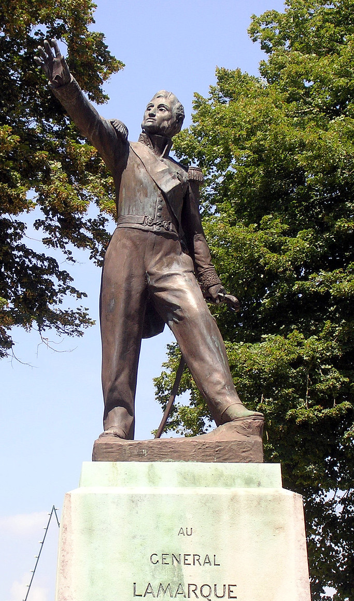
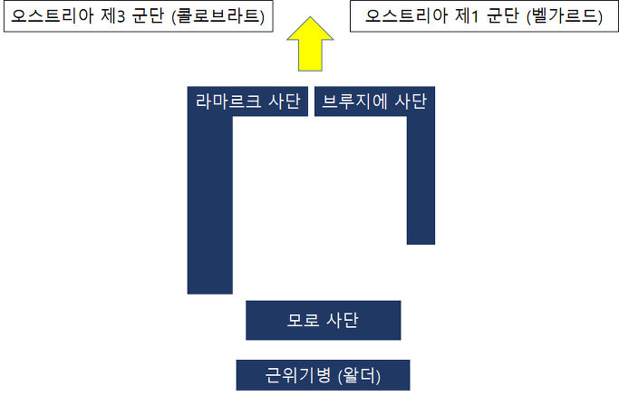
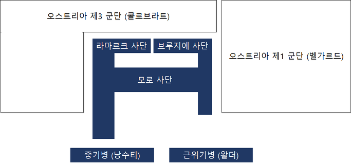
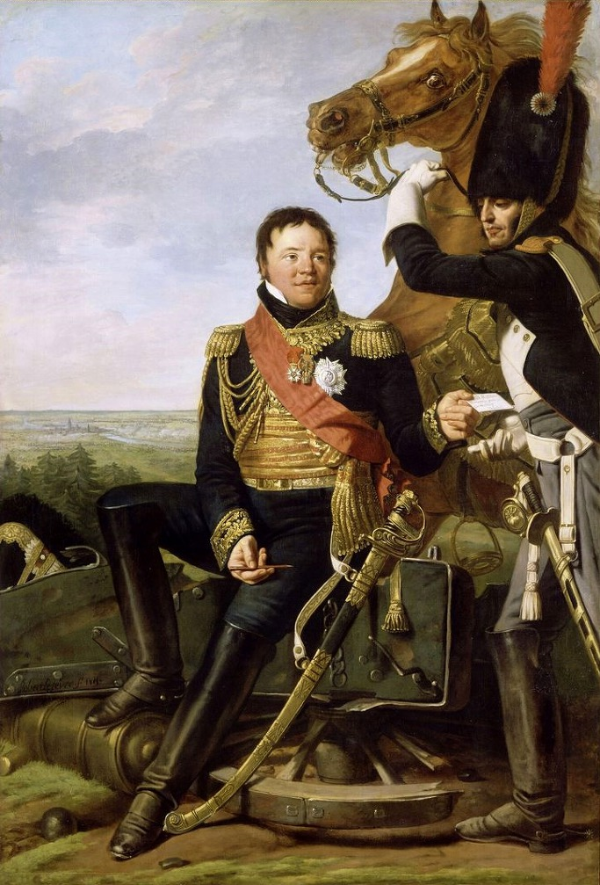

바그람 전투 (제16편) - 막도날의 기둥
게시: 2017-10-04T18:35:45+09:00
막도날의 제5 군단에는 원래 완편과는 거리가 먼 허약한 보병 2개 사단이 있었습니다. 하나는 라마르크(Jean Maximilien Lamarque) 장군이, 다른 하나는 브루지에(Jean-Baptiste Broussier) 장군이 지휘했지요. 거기에 나폴레옹이 붙여준 제6 군단 소속 모로 장군이 지휘하는 스라 장군의 사단까지 붙여서 총 1만1천 정도의 병력이 있었는데, 특히 모로 장군의 사단은 방금 지휘권을 받은 것이다보니 아무래도 모로와 그의 사단에 대해서는 믿음이 덜 가는 것이 사실이었습니다. 그렇다고 모로 장군과 긴밀하게 작전 회의를 할 여유도 없었습니다.
막도날에게는 정답이 적혀있는 문제 풀이집도 없었습니다만, 특히 시간이 없었습니다. 이렇게 뒤죽박죽 혼란스러운 상황에서 갑자기 명령을 받은 그가 어떤 대형을 짜느냐에 따라 적진을 시원하게 돌파하여 등 뒤에서 망원경으로 보고 있을 나폴레옹의 입이 귓가에 걸리게 만들 수도 있었습니다만, 반대로 자신을 포함한 전군이 몰살을 당할 수도 있었습니다. 잠깐 고민하던 막도날은 여태껏 그 누구도 해보지 않은 진형을 선택했습니다. 그것은 적군은 물론 아군까지도 눈을 휘둥그레 커지게 만든 혼종이었습니다.

(그의 고향인 생-스베에 있는 라마르크 장군의 동상입니다. 그는 부르봉 왕정 복귀 이후에도 앙시앵-레짐을 반대하고 인권 보호, 심지어 폴란드 독립 운동 지원에도 찬성하는 등 정말 진보적인 인물이어서 민중의 인기를 한 몸에 받고 있었습니다. 그의 죽음은 1832년 6월 봉기의 직접적인 계기가 되었지요. 어디서 들어본 소리 같다고요 ? 예, 맞습니다. 빅토르 위고의 레미제라블에 이름만 등장하는 라마르크 장군이 바로 이 분입니다.)
막도날은 라마르크와 브루지에의 사단을 좌우로 어깨를 나란히 하여 앞에 세웠습니다. 그런데, 그 모양이 매우 특이했습니다. 먼저, 각 사단마다 4개씩의 대대를 2줄로 늘어세워 총 8개 대대로 이루어진 긴 전면 횡대를 구성하도록 했습니다. 그 뒤를 따르는 잔여 대대들의 진형이 아주 걸작이었는데, 이 대대들은 이 긴 전면 횡대의 양쪽 끝부분 뒤로 긴 종대를 이루도록 했습니다. 즉, 거대한 ㄷ자 모양을 만들어 진격하도록 한 것입니다. 그나마 왼쪽을 맡은 라마르크의 사단에 병력이 더 많았으므로 왼쪽 측면에는 8개 대대가 늘어섰고, 오른쪽 측면에는 불과 4개 대대만 있어서, 좌우 대칭도 아니었습니다. 이것이 나폴레옹 전쟁사에 길이 남을 기념비적인 진형인 '막도날의 기둥'(la colonne de Macdonald)입니다.
막도날은 그렇게 밑변이 열린 사각형의 뒤를 왈더(Frédéric Henri Walther)가 지휘하는 근위 기병총(carabiniers-à-cheval) 연대에게 맡겼습니다. 이 중기병 연대는 막도날의 기둥이 오스트리아군 전선에 커다란 구멍을 뚫으면 그 속으로 파고 들어 무질서하게 패주하는 오스트리아군의 뒤를 쫓으며 무자비한 칼탕을 먹여줄 임무를 띠고 있었습니다. 모로의 보병 사단은 돌파가 제대로 안 될 경우 예비대로 쓰기 위해 이 ㄷ자 진형에 포함시키지 않고 따로 집단을 이룬채 뒤를 따르도록 했습니다.

(Column은 기둥이라기보다는 종대를 가리키는 말입니다. 사실 막도날의 기둥이라기보다는 막도날의 방진(Macdonald's square)라고 부르는 것이 제대로 된 묘사일 것입니다.)
막도날이 이런 희한한 진형을 만든 목적은 간단했습니다. 오스트리아군의 포병과 기병의 위협으로부터 아군의 피해를 최소화하면서도 가장 빨리 거친 전장을 가로질러 병력을 이동시킬 수 있는 최선의 방안이 바로 이런 ㄷ자 진형이라고 판단했기 때문이었습니다. 전면이 약 550m, 측면이 약 800m로 길쭉한 이 장방형 진형은 횡대의 장점과 종대의 장점을 가장 잘 결합한 물건이었습니다. 단 하나의 단점이라면 그 크기가 몹시 커서 적의 포병에게 빗맛추기도 어려운 타겟을 제공한다는 점이었습니다만, 어차피 속이 텅 비어있었으므로 한방의 포탄에 여러명의 병사들이 한꺼번에 나가 떨어지지도 않았습니다. 또 측면을 노리는 적의 기병들의 돌격에 대해서도 촘촘한 방어망으로 맞설 수 있다는 장점도 있었지요. 그 중에서도 가장 큰 장점은 그냥 좌우로 긴 횡대보다 훨씬 더 탄탄한 진형을 유지하면서도 훨씬 더 빨리 진격할 수 있다는 점이었지요. 이건 적의 기병에 맞서기 위한 보병 방진의 모바일 버전이라고 칭할 만한 것이었습니다. 그런 방진과의 차이점이라고 하면, 굳이 방진의 밑변에 보병 전열을 배치하지 않았다는 점이었습니다. 이건 어디까지나 공격을 위한 대오였으므로 후면에도 긴 보병 전열을 배치하는 것은 낭비였고, 또 후면을 노리는 적의 기병은 그 뒤를 따르는 아군 기병대가 요격할 수 있기 때문이었습니다.
혹자는 막도날이 이런 변종 방진, 횡대와 종대의 끔찍한 혼종으로 전진한 것이 과거 아우스테를리츠 전투 때와는 달리 질적으로 저하된 프랑스 보병들이 제대로 된 훈련을 받지 못해 전장에서 복잡한 전열 기동을 할 수 없었기 때문에 어쩔 수 없이 택한 꼼수였다고 평가절하합니다만, '1809: Thunder on the Danube - Napoleon's Defeat of the Habsburgs'라는 책을 쓴 Jack Gill이라는 National Defense University 교수님의 평가에 따르면, 전혀 그렇지 않다고 합니다. 오히려, 판에 박힌 전술만을 고집하지 않고 당면한 환경과 상황에 따라 다양한 전술을 채택할 수 있고 또 그런 임기응변을 유연하게 수행해낼 수 있었던 막도날과 그의 이탈리아 방면군은 매우 뛰어난 역량을 보여주었다는 것입니다. 당시 막도날이 지휘하던 이탈리아 방면군 병사들이 과거 아우스테를리츠의 프라첸 언덕을 기어오르던 병사들만큼 잘 훈련된 병사들이 아니었을지는 몰라도, 최소한 막도날이 목표했던 것은 대부분 이루어냈습니다. 그런 사실은 오스트리아군의 대포알이 날아오기 시작하자 곧 드러났습니다.
이 거대한 방진이 오스트리아군 제3 군단과 1군단 사이의 연결부를 향해 진격을 시작하자, 기다렸다는 듯이 오스트리아군의 대포가 불을 뿜었고, 오스트리아 기병대가 바람처럼 달려나와 이 방진의 측면을 노렸습니다. 대포알에는 아무도 견딜 수 없습니다. 막도날의 방진은 곧 이빠진 참빗처럼 여기저기 구멍이 뻥뻥 뚫리기 시작했습니다. 그러나 병사 1~2명이 대포알에 직격되어 나가 떨어지면서 생긴 그런 구멍은 곧 뒤따르던 병사들이 걸음을 빨리 하여 곧 메워졌습니다. 시퍼런 검을 뽑아들고 측면으로 달려들던 오스트리아 기병들도 기세만 좋았을 뿐이었습니다. 침착하게 기다리다 확실한 유효사거리 내로 들어오자마자 일제 사격을 퍼붓는 막도날의 병사들은 기병들이 파고들 빈틈을 보여주지 않았습니다.
그러나 이렇게 척척 걸어들어가는 막도날의 방진은 분명히 납으로 만든 머스켓볼과 무쇠로 만든 대포알이 회오리치는 무시무시한 화약 연기 속으로 진격하는 것이었습니다. 더군다나 오스트리아군은 루스바흐 고원이라는 결정적인 지리적 우위를 가지고 있었으므로, 막도날이 희한한 ㄷ자로 병력을 배치하며 진격할 준비를 하는 것을 훤히 내려다보고 있었습니다. 그들은 대포에 포탄을 쟁여두고 기다렸습니다. 특히 전체 전선에서 오직 막도날의 부대만 망치 역할을 하기 위해 다른 프랑스군 전선 앞으로 유별나게 튀어나오는 것이니, 그쪽으로 오스트리아군의 화력이 집중되었습니다. 막도날의 병사들은 끝까지 침착하게 진격했지만 그들이 큰 피해를 피할 방법은 없었습니다. 특히 막도날 부대의 임무를 눈치챈 콜로브라트 장군이 자신의 좌익 전선을 살짝 뒤로 빼서 오스트리아 제3 군단과 제1군단 사이에 텅 빈 공간을 일부러 만들어주면서 막도날드 군단의 피해가 더욱 커졌습니다. 그 빈 공간으로 밀고들어가자마자 양 측면을 에워싼 오스트리아군으로부터 불벼락같은 십자 사격이 날아와 좁은 공간에 갇힌 막도날의 병사들을 쓰러뜨렸던 것입니다. 제84 연대의 라코르드(Larcorde) 중위라는 사람이 남긴 기록에는 "우리가 줄지어 선 곳, 특히 방진을 구성한 곳에서는 우리 병사들의 시체가 산처럼 쌓였다"고 씌여 있습니다. 그럼에도 불구하고 막도날의 병사들은 버텨냈습니다. 동료들이 포탄과 탄환에 쓰러질 때마다 남은 병사들이 그 빈자리를 서둘러 메웠고, 기진맥진한 이 방진을 깨뜨리려는 오스트리아 기병들의 돌격을 침착한 일제 사격으로 좌절시켰습니다.
하지만 딱 거기까지였습니다. 이제 적과 머스켓 사격을 주고받을 거리까지 왔으니 막도날의 변형 방진의 임무는 끝난 것인데, 오스트리아군도 끝까지 돌파되지 않고 버텼습니다. 오히려 막도날의 방진은 3면이 포위된 상태로 그야말로 불과 납의 세례를 받고 있었지요. 이런 와중에 당연히 오스트리아군에게도 혼란과 빈틈이 생겼습니다. 가령 이렇게 3면이 포위되기 직전, 막도날의 눈에는 우측 오스트리아 제1 군단 전열에 25~30문의 대포가 버려진 채 방치된 것이 보였고, 왼쪽 제3 군단 쪽도 엉망진창의 혼란에 빠져 있었습니다. 바로 이 순간을 위해 막도날의 방진이 끔찍한 피해를 입으면서도 전진했던 것이었고, 이제 기병대들이 그 벌어진 틈으로 칼을 꼬나쥐고 달려들어가기만 하면 되는 것이었습니다.

(도끼가 적진을 쪼개다가... 박힌 채로 그만 멈춰버린 모습입니다.)
그러나 이때 프랑스군의 기병들은 희한할 정도로 굼뜨고 소극적이었습니다. 막도날이 만들어놓은 오스트리아 전열의 빈틈은 항상 거기에 있는 것이 아니라 나타났다 사라지곤 하는 순간적인 것이었는데, 그럴 때마다 프랑스 기병대는 돌격하지 않고 머뭇거리다 기회를 날려먹었습니다. 어떻게 보면 이건 급작스럽게 결정된 공격의 본질적인 문제였습니다. 막도날의 진격이 시작될 때, 그 후방을 따라오는 기병대는 왈더 장군이 이끄는 기병총 연대 일부 뿐이었고, 낭수티 장군 휘하 기병 예비대 및 기타 타 군단 소속의 기병대들은 ;막도날이 공격을 시작하니 그 뒤를 지원하라'는 긴급 명령서를 받고 허겁지겁 달려오고 있었습니다. 막도날의 기묘한 ㄷ자 전열이 서서히 진격을 시작하고 그 뒤로 여기저기 사방에서 프랑스군 기병대가 뒤늦게 모여드는 모습은 아마 루스바흐 언덕 위의 오스트리아군 눈에 꽤 장관으로 보였을 것입니다. 그렇게 급하게 띄엄띄엄 모여든 기병대들은 빽빽히 늘어서서 멱살을 쥐고 뒹굴고 있는 막도날과 오스트리아군의 전투 현장에 선뜻 뛰어들 엄두를 내지 못했습니다. 이때 이렇게 모여든 여러 기병대의 주도권을 쥐고 본보기를 보이는 역할은 근위 기병총 연대를 이끌고 처음부터 뒤를 따랐던 왈더 장군이 맡아야 했습니다. 막도날도 나중에 왈더 장군을 콕 찍어 '왜 돌격하지 않았느냐'라며 비난했으나, 왈더는 막도날에게 깍듯이 예의를 갖추면서도 '제가 공격하려면 반드시 베시에르 원수의 명령이 있거나 황제 폐하께서 직접 명을 받아야 합니다'라며 어이없는 변명을 늘어놓았습니다. 당시 베시에르는 기절한 상태로 실려나간 뒤였지요. 애초에 그런 제약 조건이 있다면 왜 막도날의 방진 뒤를 졸졸 따라왔단 말입니까 ?

(이름만 보면 발터라고 읽어야 할 것 같은 이 분은 역시 알자스 출신입니다만, 그래도 프랑스 분이기 때문에 왈더라고 읽어야 합니다. 이 분은 계속 나폴레옹 근위대에 계시다가, 1813년 무너져 내리는 제국을 지키기 위해 노력하던 중 티푸스에 감염되어 사망합니다.)
결국 막도날과 그의 병사들이 보여준 이 장관은 뜻하는 목표, 즉 오스트리아 전열 돌파 후 추격 섬멸에는 실패한 채로 주저앉고 말았습니다. 그리고 그 주된 비난은 기병대에 떨어졌습니다. 사바리(Savary) 장군은 '그토록 막강한 기병대는 단 하나의 포로도 잡지 못했다'라고 한탄했고, 나폴레옹 본인도 오후 2시경 망원경으로 이 상황을 보면서 '기병대가 나를 이렇게 실망시킨 적이 없었는데 ! 저것들 때문에 오늘 아무 전과가 없을 지경인 걸 !'이라고 격분했습니다.
물론 이건 과장이자, 모든 잘못을 부하들 탓으로 돌리는 나폴레옹의 못된 버릇일 뿐이었습니다. 정작 나폴레옹 본인도 신참 근위대를 지휘하는 라이유(Honoré Charles Reille) 장군에게 막도날을 지원하라는 명령을 내릴 때, '이제 남은 것이 고참 근위대 2개 연대 뿐이니 너무 위험을 무릅쓰지는 말게'라며 소극적인 지시를 내린 바 있었습니다. 사실 다부의 우측 공격으로 인해 승패는 이미 결정난 것이었으니, 어쩌면 막도날의 방진은 많은 포로를 잡겠다는 나폴레옹의 과욕에서 나온 쓸데없는 희생이었을 수도 있습니다. 그러나 끝나기 전엔 끝난 것이 아니라는 말이 있지요. 아직 오스트리아 측에는 판세를 뒤집을 비장의 카드 하나가 남아 있었습니다. 그리고 그 카드로 인해 불과 2~3시간 뒤에 나폴레옹의 참모진 전체가 발칵 뒤집히게 됩니다.
Source : The Reign of Napoleon Bonaparte by Robert Asprey
1809 Thunder On The Danube: Napoleon's Defeat of the Habsburgs by Jack Gill
With Napoleon's Guns by Jean-Nicolas-Auguste Noel
https://en.wikipedia.org/wiki/Wagram_order_of_battle
https://en.wikipedia.org/wiki/Battle_of_Wagram
https://en.wikipedia.org/wiki/Fr%C3%A9d%C3%A9ric_Henri_Walther
https://en.wikipedia.org/wiki/Jean_Maximilien_Lamarque